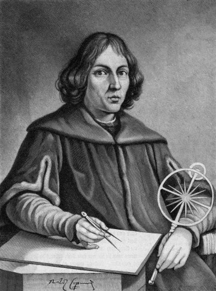

COPERNICUS
Trong giảng đường đại học, giáo sư thiên văn Maria da Novara nhìn lướt qua các sinh viên của ông, lúc bấy giờ là vào một ngày mùa thu năm 1496, ngày khai giảng năm học. Các sinh viên này đến từ nhiều nước, bởi vì Đại học Bologna của Ý là một trong những đại học lớn nhất ở châu Âu. Trong số họ có một người mới đến từ vùng đất biên giới giữa Đức và Ba Lan, tên người ấy là Nicolas Koppernigk, được các học giả thích gọi theo tiếng La Tinh là Copemicus (1).

.Novara giảng:
- Nói chung, người ta tin rằng Trái đất là một quả cầu đứng yên ỏ trung tâm của vũ trụ. Quay xung quanh nó là Mặt trời, Mặt trăng và năm hành tinh. Ngoài các thiên thể này, nhưng vẫn khá gần, là các sao quay trên một qu cầu trong suốt. Như vậy Trái đất ở ngay trung tâm của vũ trụ và mọi thứ quay xung quanh chúng ta.
Novara tiếp tục giảng rằng các hành tinh xuất hiện mỗi đêm theo vị trí khác so với mô hình của các sao. Chúng từ từ di chuyển về phía đông. Nhưng có khoảng thời gian chúng dường như ngừng lại và chuyển động lùi (2), sau đó chúng tiếp tục chuyến hành trình về hưóng đông. Vì lý do này hay lý do khác, chúng vạch ra các vòng trên bầu trời. Novara nói tiếp:
- Điều này đã được nhà bác học cổ Hy Lạp Ptolemy giải thích hơn 1.300 năm trưóc. Ptolemy đưa ra thuyết địa tâm, coi Trái đất đứng yên và là trung tâm vũ trụ. Giới hạn của vũ trụ là một vòm cầu trên đó gắn chặt các sao. Toàn bộ bầu trời sao này quay quanh một trục xuyên qua tâm Trái đất, Mặt trăng và Mặt trời chuyển động tròn quanh Trái đất cùng chiều với chiều quay của bầu trời sao nhưng với chu kỳ bé hơn. Các hành tinh chuyển động đều theo các vòng tròn phụ (ngoại luân), mà tâm của các vòng này chuyển động tròn đều quanh Trái đất theo các vòng tròn chính (chính đạo). Trái đất, Mặt trời và tâm ngoại luân của Thủy tinh và Kim tinh luôn luôn nằm trên một đường thẳng. Bằng cách dùng 39 vòng tròn khác nhau, Ptolemy có thể giải thích chuyển động nhìn thấy của Mặt trăng, Mặt trời và năm hành tinh quan sát được vào thời bấy giờ.
Copernicus ngồi nghe và hấp háy mũi với vẻ nghi ngờ. Ông biết rằng các ý tưởng của Ptolemy là quan trọng, hình như chúng tỏ ra là đúng trong hơn một ngàn năm qua. Trên thực tế, Columbus đã dùng chúng thành công khi tìm hướng trên đường đến Tân thế giới. Song Copernicus không thể không nghĩ rằng 39 vòng tròn là quá nhiều để giải thích cách chuyển động của chỉ bảy thiên thể. Ông tự nói:
- Phải có sự giải thích nào đó đơn giản hơn thế.
Khi Copernicus tiếp tục việc nghiên cứu của một sinh viên, ông học cách thực hiện các quan sát thiên văn bằng các dụng cụ của thời bấy giờ. Giáo sư Novara dạy các sinh viên cách sử dụng thước ba cạnh để đo độ cao của các sao trên bầu trời, ngoài ra còn có thước Jacob để đo góc giữa các sao. Để đo độ cao của Mặt trời lúc chính ngọ, ông giới thiệu với họ một bệ chân cột do Ptolemy nghĩ ra. Không một dụng cụ nào trong số này tốt hơn các dụng cụ được dùng hơn một ngàn năm trước đó. Copernicus cảm thấy không hài lòng với một loại khoa học mà trong đó dường như không có gì thay đổi.
Một hôm, ông hỏi Novara liệu con người đã từng có ý nghĩ nào khác hơn về thiên văn. Novara vui mừng nói:
- Có chứ! Thầy tôi, Regiomontanus nổi tiếng, không bao giờ thích hệ thống vũ trụ của Ptolemy. Ông ấy thích quan niệm của một nhà thiên văn cổ Hy Lạp khác, đó là Aristarchus ở đảo Samos. Theo Aristarchus, Mặt trời có vẻ như chỉ chuyển động ngang qua bầu trời mỗi ngày và xung quanh phía bên kia của Trái đất vào ban đêm. Thay vào đó, ông cho rằng Trái đất quay quanh trục của nó như chiếc bông vụ, mang chúng ta từ ban ngày sang ban đêm, rồi lại ban ngày. Sự quay này cũng sẽ khiến chúng ta thấy các sao hình như chuyển động ngang qua bầu trời mỗi đêm. Hơn nữa, Aristarchus tin rằng Trái đất chuyển động theo một đường tròn lớn quanh Mặt trời mỗi năm!
Copernicus phản đối:
- Nhưng nếu Trái đất quay, chúng ta sẽ bị hất văng ra ngoài!
Novara không giải thích được điều này. Tất cả những gì ông có thể đưa ra là mọi thứ trên Trái đất sẽ được mang đi vòng vòng trong một vỏ bọc bảo vệ của không khí.
Ông thú nhận:
- Tôi không biết sự giải thích nào là đúng. Nhưng tôi tin rằng hình học của bầu trời sẽ là đơn giản. Bất kỳ ý tưởng nào càng đơn giản thì có thể ý tưởng ấy đúng.
Copernicus nhiệt tình lắng nghe. Con người này cũng có suy nghĩ giống ông là hoài nghi những sự giải thích phức tạp. Để sau đó, ông đúng để nghi ngờ thuyết địa tâm của Ptolemy.
Được giáo sư Novara khuyến khích, Copernicus lao sâu vào nghiên cứu thiên văn. Ông học tiếng Hy Lạp và đọc tác phẩm của Ptolemy qua bản gốc. Em trai ông là Andreas đến gõ cửa phòng ông, khuyên ông tạm rời bỏ sách để ra ngoài vui chơi thư giãn, nhưng ông lắc đầu. Ông đang quá vui với cái ông hiện có. Quan niệm của Aristarchus đã khơi dậy trí tưởng tượng của Copernicus, ông quyết tâm xem nó sẽ dẫn ông đến đâu.
Ngoài ra, ông cũng phải nghiên cứu các môn khác. Ông học hình học mà ông cần, trước khi có thể nắm vững đầy đủ thuyết địa tâm của Ptolemy. Ông học y học kỳ quặc của thời bấy giờ, viết ra các đơn thuốc trên bất kỳ cái gì trong tầm tay, thậm chí trên bìa sau sách giáo khoa về Euclid một cách trịnh trọng:
- Cho thằn lằn vào dầu ôliu và cho giun đất vào rượu...
Có thể ông có quan niệm của riêng ông về thiên văn; nhưng về y học, ông chấp nhận đi theo những người khác.
Giờ đây, nhờ có sự nâng đỡ của người chú ruột là giám mục, Copernicus chính thức trở thành một giáo sĩ và cũng nghiên cứu luật giáo hội. Từ Bologna, ông đến học đại học ở Rome, từ Rome ông đến Padua. Tắm nắng dưới bầu trời rực rỡ của nước Ý, ông chạnh lòng nhớ về cảnh ảm đạm ở quê hương Ba Lan.
Song đến năm 1506, ông phải ra đi. Người chú ruột của ông lúc bấy giờ là giám mục địa phận Ermland triệu hồi ông về Ba Lan để làm thầy thuốc riêng cho ông ấy. Copernicus thu dọn đồ đạc và giã biệt nước Ý, nhận ra rằng những ngày sinh viên của mình đã qua. Lúc ấy, ông 33 tuổi.
Sống trong dinh thự chính thức của giám mục, lâu đài Heilsberg ở Lidzbarc, Copernicus phải quan sát các nghi thức cầu kỳ. Vào giữa trưa, chuông rung báo giờ ăn, mọi người trong lâu đài phải bước đến cửa căn hộ của họ và kính cẩn chờ giám mục. Sau đó, trong tiếng sủa rộ của đàn chó săn mà ông vừa cho chúng ăn, giám mục xuất hiện ở sân trong của lâu đài, ăn vận lộng lẫy với mũ tế và găng tay màu tía, mang gậy quyền. Mọi người sẽ theo giám mục đến sảnh đường các hiệp sĩ, nơi mà mỗi người có một chỗ của mình bên bàn, được ấn định nghiêm ngặt theo tầng lớp xã hội. Lẽ cố nhiên là giám mục ngồi ở bàn đầu. Copernicus, với tư cách là cháu trai và thầy thuốc riêng, ngồi ở bàn thứ nhì. Bàn thứ chín, là bàn chót trong thang bậc, dành cho những người làm xiếc tung hứng, các anh hề và những người làm trò vui.
Chính trong môi trường kỳ lạ này, Copernicus đã vật lộn để cải cách thiên văn học và thay đổi toàn bộ quan niệm của con người nghĩ về vũ trụ. Trải qua sáu năm sống trong lâu đài Heilsberg, Copernicus nhận ra rằng Trái đất thực sự chuyển động quanh Mặt trời. Điều này giải thích cho các vòng hành tinh. Như vậy, ông đã tìm ra sự đơn giản mà bấy lâu ông mong đợi! Ông nghĩ:
- Trái đất phải mất một năm để chuyển động quanh Mặt trời, nhưng Hỏa tinh phải mất hai năm và Mộc tinh phải mất gần mười hai năm. Vậy thì, rõ ràng là khi Trái đất chuyển động nhanh, nó sẽ thường xuyên đi ngang qua các hành tinh chuyển động chậm hơn này. Mỗi lần Trái đất vượt qua một hành tinh, thì hành tinh đó trông có vẻ như chuyển động lùi trong tương quan với Trái đất.
Ngày nay, chúng ta biết rằng nếu giả sử ta đi trên một đoàn tàu đang vượt qua một đoàn tàu khác chạy cùng chiều nhưng chậm hơn trên đường ray kế bên, thì ta thấy đoàn tàu chạy chậm hơn ấy dường như đang chuyển động lùi. Sau đó, khi đoàn tàu của ta đi qua khá xa, ta nhận ra rằng nó đang chuyển động về phía trước.
Copernicus hớn hở nhận xét:
- Giả sử Trái đất đang chuyển động, thì chúng ta có thể giải thích các vòng hành tinh như là một ảo giác.
Một khi thừa nhận Trái đất chuyển động quanh Mặt trời, ông sẵn sàng tin rằng Trái đất cũng tự quay quanh trục của nó như chiếc bông vụ. Một số người cho rằng nếu Trái đất quay đủ nhanh để chuyển động trọn một vòng trong một ngày, thì nó sẽ vỡ vụn thành từng mảnh như chiếc bánh xe bằng gỗ quay quá nhanh. Copernicus phản công lại điều này bằng cách lập luận rằng nếu bảo Trái đất không quay, vậy thì vòm cầu lớn mang các sao phải quay, mà nếu vòm cầu này quay thì nó phải chuyển động nhanh hơn và càng có khả năng dễ vỡ vụn hơn. Dù sao đi nữa, vận tốc mà Trái đất phải quay là đáng sợ.
Ông thì thầm, hầu như không dám tin vào sự thật:
- Trái đất đang quay với vận tốc khoảng 300 bước chân mỗi giây!
Nếu nhìn từ xa, mọi thứ sẽ lướt qua trong một cái chóp mắt. Ông không thể giải thích tại sao mọi thứ không bị hất văng ra khỏi Trái đất, ông chưa nghĩ ra sức hút của Trái đất là một mỏ neo an toàn trong hành trình chuyển động của nó trong không gian.
Một lúng túng khác lại đến. Aristarchus đã làm một phép đo sơ sài tính khoảng cách từ Trái đất đến Mặt trời. Dùng các số liệu xấp xỉ thô thiển, ông tính toán rằng Mặt trời ở xa ít nhất là 6,6 triệu đến 8,2 triệu km, (trên thực tế, Mặt trời ở xa 150 triệu km). Nếu Trái đất quay quanh Mặt trời, điều này có nghĩa là nó phải chuyển động theo một đường tròn cực lớn có đường kính khoảng 16,4 triệu km. Song con người tin rằng các sao không ở xa, họ lập luận rằng một hành trình rộng lớn như vậy chắc chắn sẽ đưa Trái đất đến gần các sao, trước tiên là trên một phía của đường tròn, sau đó là trên phía kia. Tuy nhiên, không ai có thể nhìn thấy các nhóm sao trông gần hơn vào một tháng nào đó trong năm so vói các tháng khác. Họ quyết định rằng, điều này chứng tỏ Trái đất không chuyển động quanh Mặt trời.
Song Copernicus thì lại nghĩ khác, ông phát biểu:
- Nó chứng tỏ rằng các sao phải ở rất xa, xa hơn nhiều so vói bất cứ ai đã nghĩ. Thật ra, chúng phải ở xa đến mức thậm chí một hành trình 16 triệu km là quá nhỏ để so sánh, cho nên khoảng cách giữa Trái đất và các sao hầu như vẫn giữ nguyên!
Copernicus đã dũng cảm nghĩ ra một vũ trụ rất khác với vũ trụ mà ông đã được truyền đạt để tin vào nó. Thay vì đứng yên, Trái đất đang chuyển động quanh Mặt trời vói vận tốc rất nhanh. Các sao quen thuộc, trông rất gần, được gắn trên vòm cầu của chúng nằm xa thẳm trong không gian.
Mặc dù Copernicus đã giải thích các vòng hành tinh, nhưng ông vẫn không thể giải thích được các quỹ đạo hành tinh như là các đường tròn đơn giản. Các quan sát của ông cho thấy là chúng không phải như vậy. Do đó, ông bám vào khái niệm cơ
bản về các đường tròn chồng lên các đường tròn. Theo ông, các hành tinh không chỉ chuyển động quanh Mặt trời trên các đường tròn đồng tâm, mà còn quay trên trục của chúng. Để chứng minh điều này, ông phải kiểm tra từng sự sắp xếp của các đường tròn chồng lên các đường tròn với hàng ngàn ghi chép của các nhà thiên văn cổ để lại.
Copernicus nghĩ dần dần rồi ông sẽ tìm ra giải đáp qua các tính toán. Không thể tự mình giữ tin này lâu hơn nữa, ông bắt đầu nói bóng gió với các khách viếng có cảm tình tại lâu đài. Cuối cùng, năm 1512, ông viết một quyển sách mỏng giải thích tổng quát lý thuyết của ông, nhưng bỏ qua chi tiết toán học. Ông gửi vài bản chép tay của quyển sách này cho các học giả, trong đó ông hãnh diện viết:
- 34 đường tròn, đủ để giải thích toàn bộ cấu trúc của vũ trụ và toàn bộ chuyển động của các hành tinh.
 .
.
Thật không may, Copernicus vẫn phải hoàn tất các tính toán chi tiết. Ông choáng váng khi thấy rằng càng làm việc lâu với các phép tính, chúng càng trở nên phức tạp. Các vòng chồng chéo lên các vòng một cách rắc rối. Cuối cùng, sau hơn 20 năm nỗ lực, ông thấy rằng mình phải cần đến 48 vòng, tức nhiều hơn 9 vòng so vói Ptolemy đã dùng! Đấy là một thất vọng nặng nề. Không còn tin chắc vào lý thuyết của mình nữa, ông gác bản thảo và thôi không tìm cách in nó.
Trong lúc đó, quyển sách mỏng của ông đã được các học giả đọc ở nhiều nơi trên châu Âu. Trong số đó có một giáo sư trẻ tên là Joachim Rheticus, ông say mê nó đến mức quyết định tìm gặp Copernicus. Ông mang đến các món quà quý giá là bản in đầu tiên các tác phẩm của Euclid và Ptolemy bằng tiếng Hy Lạp. Quan trọng hơn, ông mang đến sinh lực và niềm tin tràn trề vào lý thuyết của Copernicus.
Rheticus tuyên bố:
- Thưa thầy, thuyết nhật tâm của thầy sẽ mở ra một kỷ nguyên mới trong thiên văn học. Thầy phải cho in sách của mình, vì lợi ích của nhân loại!
Copernicus không tin chắc như thế. Sự sắp xếp rắc rối của các vòng hành tinh vẫn còn ám ảnh ông. Nhưng Rheticus không chịu thua, ngày này sang ngày khác ông biện luận và van nài. Thậm chí ông xin đọc lại bản thảo để sửa các lỗi nhỏ rồi thu xếp mang đi in. Ông nhận làm tất cả, miễn là Copernicus đồng ý!
Cuối cùng, Copernicus nhượng bộ. Ông lấy ra từ nơi cất giấu chồng bản thảo dày cộp và trao cho Rheticus. Năm 1543, công trình của ông được in ra dưới tựa đề Về sự quay của các thiên cầu. Song tác giả của quyển sách đã chờ quá lâu. Vào cuối năm 1542, ông gặp phải một cơn đột quỵ; khi bản in đầu tiên được mang đến, ông đã kiệt sức. Copernicus chỉ chạm tay vào quyển sách, đấy là tất cả những gì ông có thể làm. Vài giờ sau, ông trút hơi thở cuối cùng. Đó là ngày 24 tháng Năm 1543, lúc ấy ông đã 70 tuổi.
*
* *
Copernicus đúng khi ông ray rứt về hệ thống phức tạp các vòng hành tinh của mình. Ngày nay, chúng ta biết rằng mặc dù Trái đất vẫn chuyển động quanh Mặt trời, nhưng các vòng thêm vào là không cần thiết để giải thích chuyển động của các hành tinh.
Song Copernicus vẫn thành công. Ông là người đầu tiên tìm cách chứng minh bằng toán học và chính xác Trái đất có thể chuyển động quanh Mặt trời như thế nào, và sự giải thích về các vòng hành tinh vẫn đúng đến ngày nay. Quan trọng hơn nữa, ông giúp nhân loại tin vào quan niệm Trái đất chuyển động. Có thể nó chuyển động theo các vòng chồng chéo, hoặc có thể không; nhưng bất cứ giá nào nó vẫn chuyển động. Trái đất không còn là trung tâm của vũ trụ nữa. Và một khi điều đó được thừa nhận, sẽ có con đường mở ra cho những ai tìm hiểu Trái đất thực sự chuyển động như thế nào.
Chú thích:
(1) Nicolaus Copernicus (1473-1543). Nhà thiên văn người Ba Lan. Ông nghiên cứu sâu sắc thiên văn thời cổ, đánh giá cao thuyết của Ptolemy, nhưng về sau ông phát hiện những điều vô lý của thuyết địa tâm này và đưa ra thuyết nhật tâm, coi Mặt trời đứng yên ở trung tâm hệ, Trái đất và các hành tinh chuyển động quanh Mặt trời. Thuyết nhật tâm của Copernicus bác bỏ vị trí trung tâm của Trái đất do Thượng đế sáng tạo, nên đã bị Giáo hội Thiên Chúa giáo ngăn cấm. Công trình cơ bản của Copernicus được trình bày trong cuốn sách Về sự quay của các thiên cầu xuất bản vào tháng Năm năm 1543, ngay sau khi ông vừa qua đời.
(2) Sự lùi. Chuyển động lùi biểu kiến địa tâm của một hành tinh ngược với chuyển động thực của nó trên thiên cầu từ Tây sang Đông (ngược chiều nhật động) do ta quan sát nó từ Trái đất đang chuyển động quanh Mặt trời. Từ đang nhìn thấy nó chuyển động thuận sang chuyển động lùi, có một khoảng thời gian ta thấy nó đứng yên.